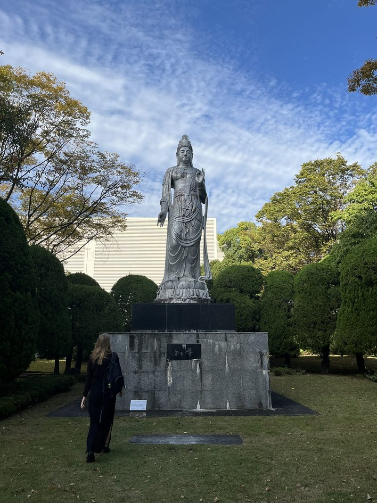
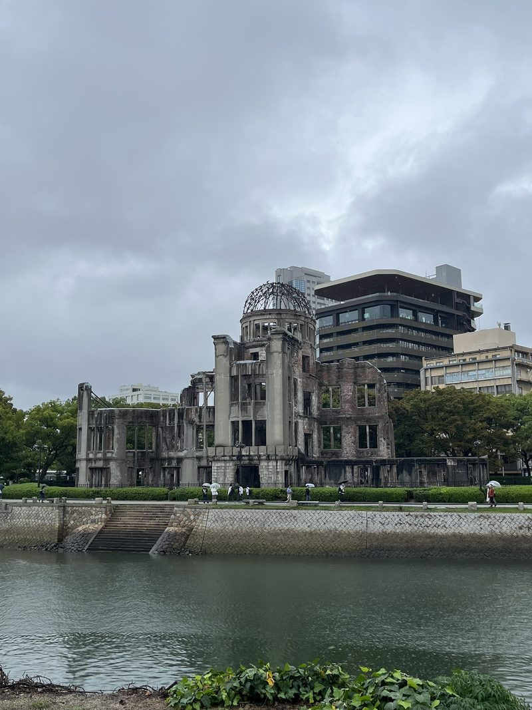
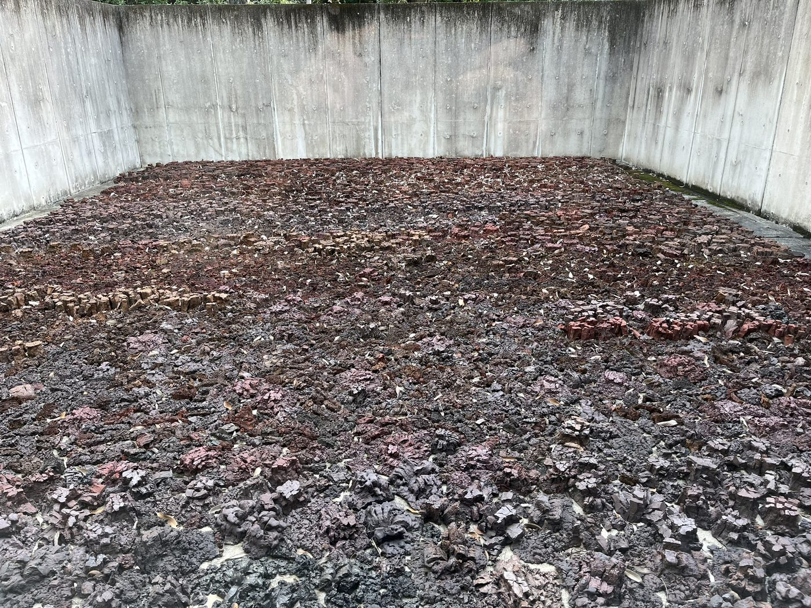
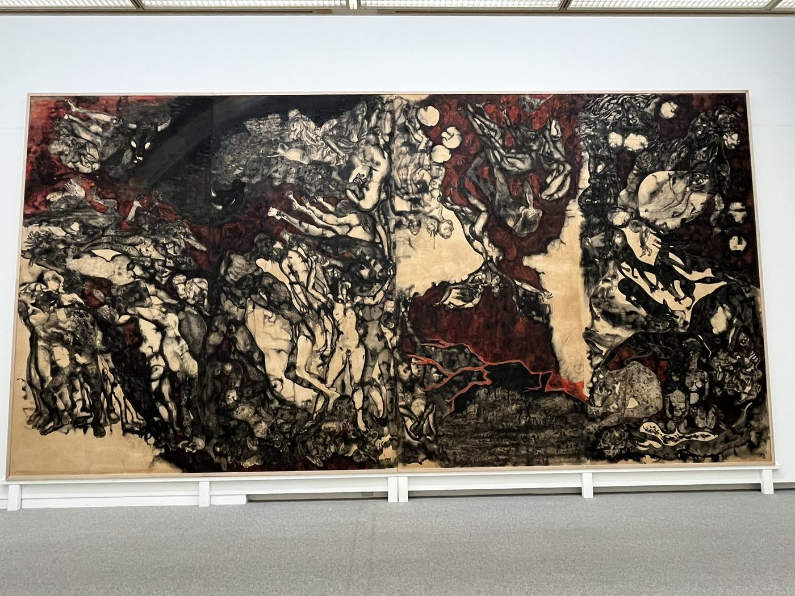
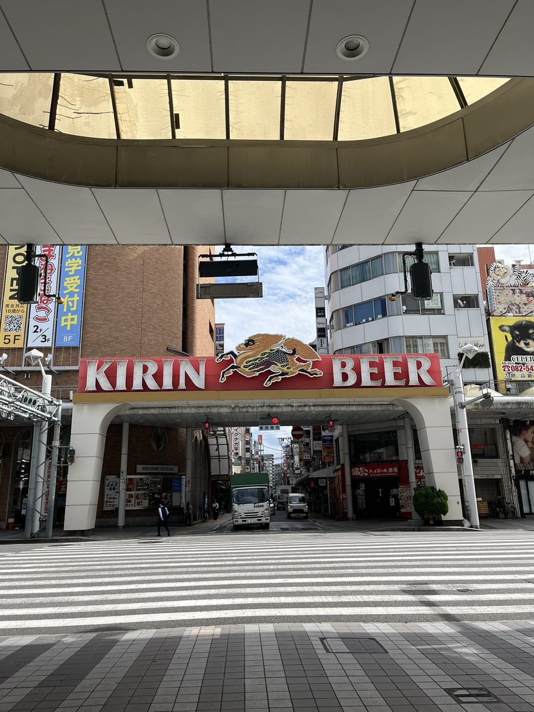

Er is niets anders waar het over kan gaan. Ik voelde de zenuwen al dagen van tevoren, en bij de eerste busrit door de stad daalt de zwaarte over me neer, nog niet beseffend dat ik op dat moment over dé brug rij.
De brug in de vorm van een T. Het strategische mikpunt van de in precisie voorbereide bom. Vijftig oefeningen over Japan verspreid, op de dag zelf een verkenningsvliegtuig. Windsnelheid verwaarloosbaar, heldere lucht, de piloot ziet de levendigheid van een opstartende stad. 6 augustus 1945 om 08:15 uur, 600 meter boven de grond waar de impact maximaal zou zijn, laten vallen. Stad weg.
We verblijven er niet ver vandaan, bij het hypocentrum. Er ligt nu een vredespark met het iconische culturele gebouw dat als een van de weinige standhield, naast alles wat plat was. Direct ernaast ligt het Peace Museum met foto’s, voorwerpen en verhalen over de hel. Het is iets wat je rustig over je heen wilt laten komen, sommige verminkingen niet bekijken, andere verwoestingen juist in je opnemen. Maar het is te druk: met tientallen schoolklassen worden we in de donkere expositie gepropt, waar je schuifelend of stilstaand doorheen tunnelt zonder echt te kijken. De schaduw van een man is in de stenen trap van de bank gebrand waar hij zat te wachten. Ik onderdruk de neiging om aan een verbrande dakpan te ruiken.


Je wil gelijk weg uit de claustrofobische sfeer. Toch lees ik nog de uitgebreide tijdlijn over de stad die wat rustiger bezocht wordt. Over de eerste 78.000 doden van de 350.000 inwoners, in één klap. Over hoe dat aantal zou verdubbelen in de opvolgende maanden door radioactieve stoffen die de lichamen overnamen. Over hoe een tekort aan medische hulp en voedsel nog meer slachtoffers maakte. Over hoe je anders wel misvormd was of kanker kreeg. Over hoe generaties daarna kampten met angsten over hun gezondheid en mogelijke verborgen stralingseffecten, of met sociale stigmatisering bij huwelijken, tot op de dag van vandaag.
Maar de mens zal bouwen. En ook het museum is strijdlustig, er hangen excuses voor het nationale beleid in de aanloop naar de catastrofe. De nadruk ligt op de fout van de mensheid als geheel. Geen anti-Amerikamentaliteit, maar de stad als symbool voor universele vrede. Dit nooit meer: “Laat de fout niet herhaald worden.”
We dompelen ons erin onder, langs de herinneringsmonumenten, langs uitzichtpunten met foto’s van hoe de stad ooit was, door andere tentoonstellingen waar de horror onvermijdelijk uit de ziel van hedendaagse kunstenaars spuwt. Een enorm schilderij van de hel als vergelijking maakt indruk.


Nu is alles in kaart gebracht. Nu ken ik de oude en de nieuwe gebouwen, de gezichten van de vermoorden, verminkten en overlevenden, en van hun nageslacht. Nu is het geen gruwel dat ik altijd ergens weg kon stoppen, maar staat het voor altijd in m’n geheugen gegrift, in de vorm van de stad in twee tijdperken.
Onze hoofden zijn vol en vermoeid. En we blijven hangen in machteloze neerslachtigheid. Net als de stad zelf, zo lijkt het toch enigszins. Ja, het is een metropool met drukke wegen – en zulke grote kruispunten dat je eronderdoor moet – maar wel met relatief lage gebouwen en energie. Waar je niet telkens stilstaat voor foto’s. Een mogelijk ingebeelde neerslachtigheid en ingetogenheid.
Maar de automatische ingetogenheid en gedempte stemmen van het vredespark zeggen niet alles. De bewuste stadsplanning en geografie – brede boulevards en rivieren met parken aan de oevers – verhullen de levensdrift. Wie goed kijkt op de niet zo oude straten ziet de kinderen huppelen naar school in schotse rokken, pubers geinen met elkaar, de restaurants volzitten en teruggekeerde forensen samendrommen in de bars. In de overdekte markthallen staan arcadespellen, ’s avonds gaat de neon aan.
De mens is even onverdraaglijk als veerkrachtig – een wonder.
